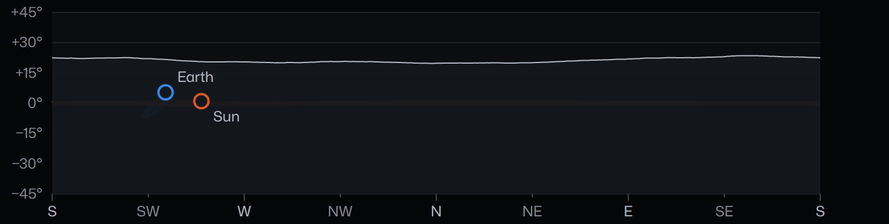

Our thinking
The choices behind the tool, and one comparison followed from its inputs to the sentence on screen.
The question we started from
The challenge asks for a way to see where the Sun and the Earth sit in the sky over a lunar landing site, and how that changes when the site or the date changes. The data already exists. JPL Horizons gives the positions, and Quickmap and Moon Trek show the terrain. None of them is built to put two options next to each other.
That gap matters most near the south pole, where IM-1 landed and IM-2 was aimed. The Sun and the Earth both stay within a few degrees of the horizon there, so a small change in site or date can decide whether a lander has power and a line home. We wanted someone to be able to change one thing and see what it costs.
The choices we made
-
Two scenarios at once
The challenge describes planners weighing options: one site against another, or a landing date against a later one. So the tool holds two scenarios, A and B, and each chart and table shows both of them.
-
The answer comes first, as a sentence
Charts take time to read. The first thing on the page is a plain sentence such as “B loses the Sun first, in 7 d 16 h. A keeps it 23 h longer.” The table and the charts sit underneath for anyone who wants to see where that came from.
-
The horizon is the real ground
Our first version used a flat horizon. At the poles that gives wrong answers, because the Sun is so low that a ridge or a crater wall can hide it for weeks. We switched to NASA’s LOLA laser altimeter data and now work out the skyline in 720 compass directions around a site.
Shackleton crater shows the difference. With a flat horizon the tool calls the rim 53% lit and the floor 47% lit over 90 days. With the terrain, the rim is in sunlight 91% of the time and the floor gets none. The floor of Shackleton is in permanent shadow, so that second answer is the one that matches the Moon.

From the rim, the ground stays near 0° all the way round. 
From the floor, the crater wall is 20° to 24° high and the Sun stays under 2°. -
Sunlight counted as energy
Hours of sunlight say little about power when the Sun is half hidden behind a ridge. The tool adds up the solar energy that reaches one square metre facing the Sun, in kWh, and counts only the part of the Sun’s disk above the skyline.
It also reports the longest unbroken stretch without the Sun, since that is the stretch a battery has to cover. The same search runs for the Earth and gives the longest wait for a direct radio link.
-
Nothing to install
The tool is plain HTML, CSS and JavaScript. It opens from a file and works offline, so a judge or a teacher can run it anywhere and no server can go down in the middle of a demo.
One comparison, start to finish
This is the first worked case on the main page, “Move the site 175 km”, followed through the tool one step at a time. A is the IM-1 landing site and B is the planned IM-2 site. Both start at the IM-1 landing time, Feb 22, 2024, 23:24 UTC, and run for 90 days.
-
Place the two sites
80.13°S, 1.44°E
84.78°S, 29.13°E
The IM-1 position is from NASA’s Lunar Reconnaissance Orbiter image of the lander. The IM-2 position is from the LROC page for its landing region. The tool links both sources under the site name.
-
Find the Sun at that minute
10.5° up, 19° from north
6.3° up, 351° from north
Astronomy Engine gives the positions of the Sun, Earth and Moon, and the IAU 2009 model gives the Moon’s rotation. We compared 852 time steps at four places with NASA JPL Horizons. The largest difference was 0.0073°.
-
Find the ground in that direction
Skyline at +0.2°
Skyline at −1.2°
The skyline is the highest ground along each of 720 directions, out to 200 km, from the 240 m LOLA grid. A second version of the calculation in Python agrees within 0.05°. The grid puts the IM-1 site at 2,588 m, and NASA gives 2,579 m.
-
Decide whether the Sun is up
10.3° above the skyline
7.5° above the skyline
The Sun counts as up when its centre is higher than the ground in its direction. The Earth gets the same test. At this minute both are up at both sites.
-
Run the clock forward 90 days
Sun sets in 8 d 15 h. The Earth stays up.
Sun sets in 7 d 16 h. The Earth sets in 9 d.
The tool repeats steps 2 to 4 across the period and searches for the moment each body crosses the skyline. With a flat horizon, its sunset time at the IM-1 site is 4 seconds from the Horizons time.
-
Add up the period
859 h of sunlight, 1,164 kWh per m². Longest dark 18 d 14 h. No gap in view of the Earth.
1,030 h of sunlight, 1,389 kWh per m². Longest dark 16 d 11 h. Longest gap in view of the Earth 5 d 17 h.
Energy starts from 1,361 W per m² at the Earth’s distance from the Sun, adjusted for the distance that day and for how much of the Sun’s disk clears the skyline. Eleven of the 39 automated tests cover the energy sum and the gap search.
-
Write the sentence
“B loses the Sun first, in 7 d 16 h. A keeps it 23 h longer.”
“B loses sight of the Earth in 9 d. A keeps it for at least the next 90 days.”The page compares the two sets of numbers and puts the result at the top. In this case the IM-2 site collects more solar energy over the 90 days, and it goes up to 5 d 17 h at a time without a view of the Earth.
What we left out
The tool answers a geometry question: is the Sun, or the Earth, above the ground in its direction. Turning sunlight into watts needs a model of the solar panel. Turning “Earth in view” into a radio link needs an antenna and a ground station. We did not build those, and the main page says so next to the numbers.
The terrain has limits of its own. We use it within 17° of a pole and a flat horizon everywhere else, because away from the poles a 2° ridge moves sunrise by about 4 hours. The grid is 240 m for the polar sites in the list and 960 m for a point you click, and both smooth out narrow ridges. At the IM-1 site the two grids put the first sunset 4 hours apart.
We compared our Shackleton rim result with published work. Mazarico and others (2011) report a point near the rim that is sunlit for 240 days in a row. Our rim point is a different spot on a coarser grid, and over 2024 it gets sunlight 87% of the time.
Where the AI tool came in
We used Claude Code, an AI coding tool, to write the code, the tests, the slides and the drafts of our text, this page included. We directed that work and reviewed it. The idea of comparing two scenarios is ours and comes from the challenge statement.
The terrain skyline and the energy number were added after we asked the tool where the project was weakest and told it to close those gaps. Files written this way carry a label at the top, and SI_USE.md in the repository logs each session. The project has no AI-generated images. The Moon on the main page is NASA imagery drawn by code.
What we would do next
NASA Goddard publishes 5 m LOLA grids for south pole landing sites. Adding them would fix the nearest ridges, which is where a 240 m grid is weakest. After that we would give the solar panel a tilt and add an antenna model, so the energy and radio numbers get closer to what an engineer needs.
The repository has more detail. docs/HOW_IT_WORKS.md gives each formula with the function that runs it, docs/FAQ.md answers the questions we expect from judges, and SOURCES.md lists where each piece of data came from.